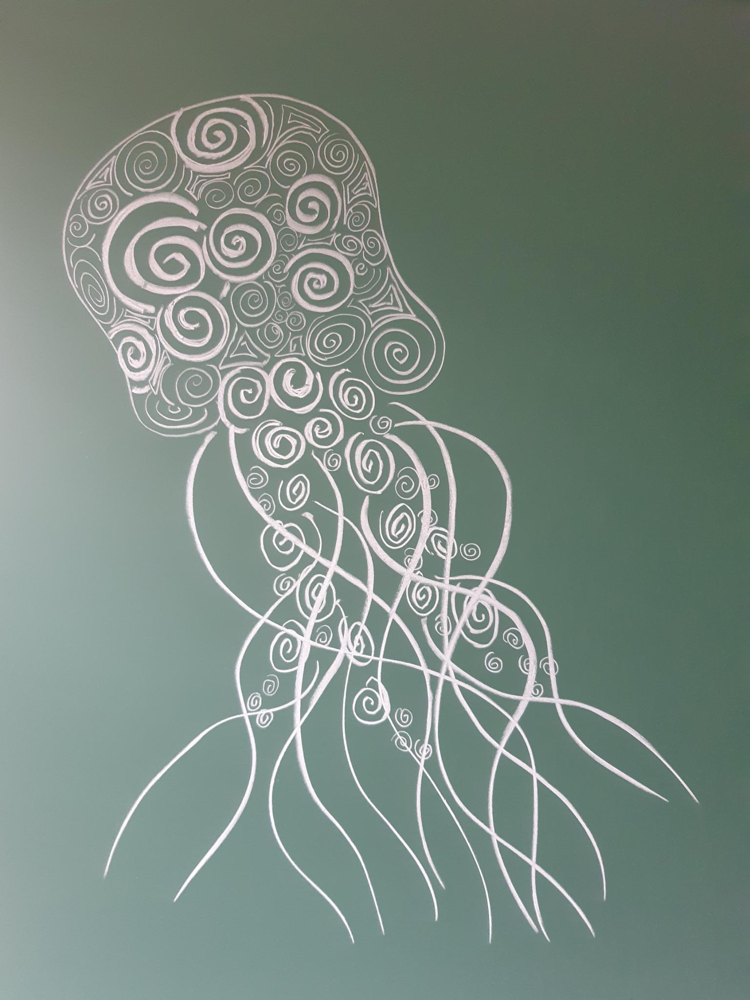

My papers
H-Planarity and Parametric Extensions: when Modulators Act Globally , with Fedor V. Fomin, Petr A. Golovach, and Dimitrios M. Thilikos. Conference: SODA 2026.Fault-Tolerant Matroid Bases , with Matthias Bentert, Fedor V. Fomin, and Petr A. Golovach. Conference: ESA 2025 .When does FTP become FPT? , with Matthias Bentert, Fedor V. Fomin, and Petr A. Golovach. Conference: WG 2025.Excluding Pinched Spheres , with Evangelos Protopapas, Dimitrios M. Thilikos, and Sebastian Wiederrecht, 2025.Graph modification of bounded size to minor-closed classes as fast as vertex deletion , with Ignasi Sau and Dimitrios M. Thilikos. Conference: ESA 2025 .Vertex identification to a forest , with Ignasi Sau and Dimitrios M. Thilikos, 2024. Journal: Discrete Mathematics .On the parameterized complexity of computing good edge-labelings , with Davi de Andrade, Júlio Araújo, Ignasi Sau, and Ana Silva, 2024.A note on locating sets in twin-free graphs , with Nicolas Bousquet, Quentin Chuet, Victor Falgas-Ravry, and Amaury Jacques, 2024. Journal: Discrete Mathematics .PACE Solver Description: Touiouidth, with Gaétan Berthe, Yoann Coudert–Osmont, Alexander Dobler, Amadeus Reinald, and Mathis Rocton. Conference: IPEC 2023 .
Dynamic programming on bipartite tree decompositions , with Lars Jaffke, Ignasi Sau, and Dimitrios M. Thilikos. Conference: IPEC 2023 . Journal: JCSS .Faster parameterized algorithms for modification problems to minor-closed classes , with Ignasi Sau, Giannos Stamoulis, and Dimitrios M. Thilikos. Conference: ICALP 2023 . Journal: TheoretiCS .

Drawing by Sebastian Wiederrecht
Challenge
PACE Challenge 2023 , with Gaétan Berthe, Yoann Coudert–Osmont, Alexander Dobler, Amadeus Reinald, and Mathis Rocton: 3rd place in the Exact Track.